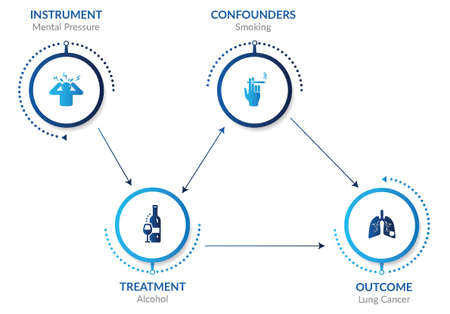

Developed a comprehensive mathematical model of a muscle that closely emulates real-life muscle behavior. Investigated the
impact of incorporating tendon feedback on muscle performance, showcasing improved results in alignment with real-world
observations. Designed and implemented an Optimal Controller utilizing the SNOPT optimization technique to generate
muscle stimulation patterns. Leveraged the Optimal Controller to achieve specific objectives, such as reaching an endpoint
or tracking a desired trajectory. Tech: MATLAB, SIMULINK, SNOPT toolbox

Configured and set up the simulation environment to facilitate the project objectives. Enhanced
semantic segmentation by replacing Mask RCNN with YOLOv7, resulting in improved object recognition and localization.
Implemented the RRT (Rapidly-Exploring Random Tree) algorithm as a local planner to handle dynamic environmental
situations and effectively navigate around obstacles. Tech: Python, PyTorch, OpenCV, Facebook Habitat

Designed a neural network architecture utilizing the LBFGS optimizer to fine-tune
parameters, enabling it to generate precise control outputs guiding a vehicle to safely navigate and park between obstacles.
The vehicle’s simulation was based on the bicycle model, demonstrating effective real-world applicability of the neural
network’s control capabilities. Tech: PyTorch, Python & Scikit-learn.
Developed
a robotic arm and hand using Simulink to perform hand gestures and specific tasks such as pancake making and window
cleaning by providing trajectory inputs.
Conducted open-loop analysis to identify system instability, subsequently designed and implemented a PID
controller, meticulously tuning its parameters for enhanced system performance and robustness. Additionally, devised an
LQR (Linear Quadratic Regulator) controller to minimize control effort and amplitude. Implemented a pre-compensator to
effectively reduce steady-state error in the control system. Tech: MATLAB & Simulink.

techniques to extract relevant features and eliminate insignificant ones, thereby improving model performance. Achieved a
significant enhancement in 90% of implemented models through feature extraction based on causal effects. Tech: Python &
Scikit-learn.
Conducted theoretical analysis, incorporating velocity consensus and inter-agent interaction potential functions into
controller design equations. Successfully applied these theoretical foundations to simulate a flocking behavior involving five
drones, orchestrating their movements to follow an ellipse-like pattern. Skillfully visualized and implemented this behavior
within the ROS2 environment. Tech: Python, ROS2, rviz.
Converted original data-sets into a time-series format suitable for analysis using STL
(Signal Temporal Logic) formula. Conducted causal fairness analysis on temporal data-sets to examine the impact of
different factors on fairness outcomes. Quantified and evaluated various types of effects obtained from the causal fairness
analysis. Generated baseline results using the time-series dataset, providing a reference for comparison and further
analysis.